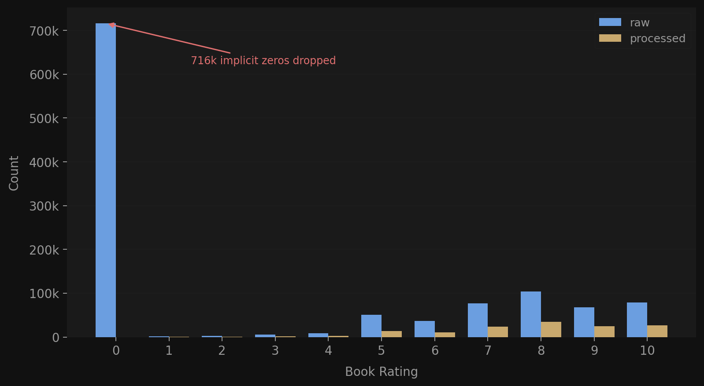
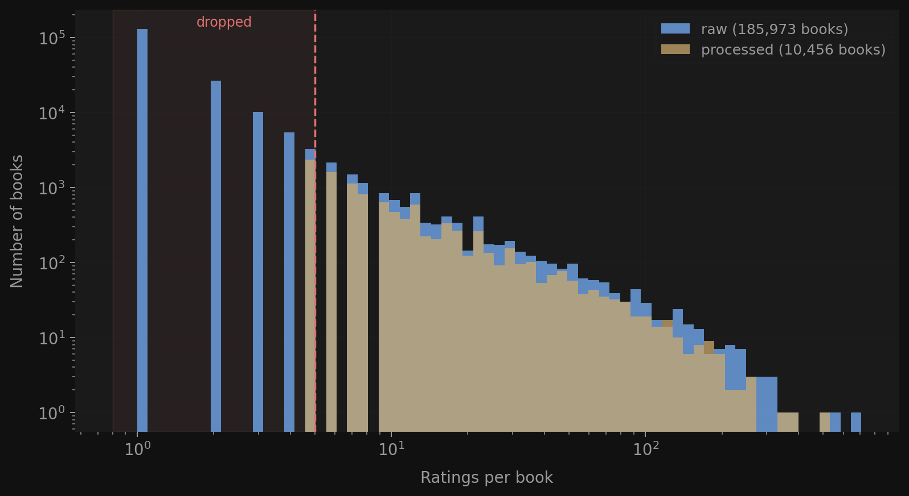
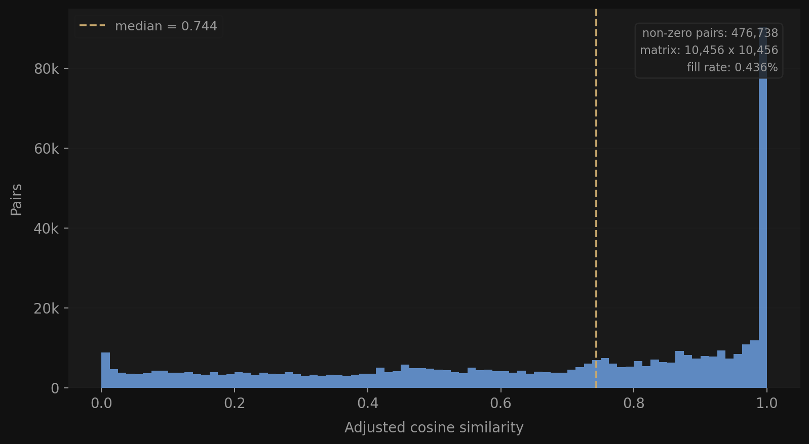
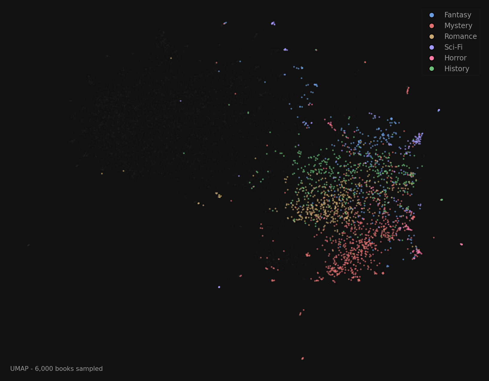
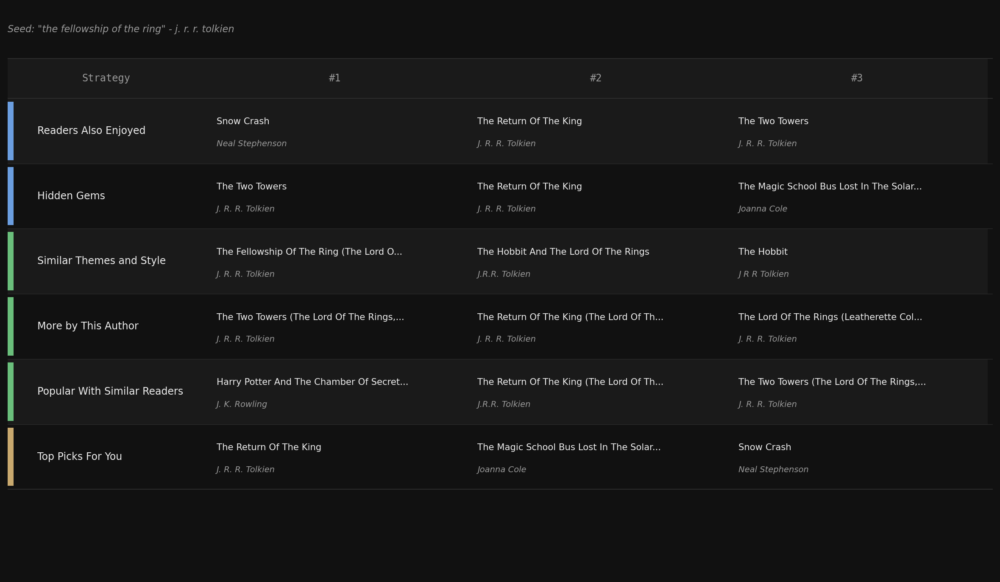

item_similarity.npz CF sparse matrixisbn_index.json ISBN -> integer matrix positionbook_stats.parquet ratings + Bayesian avgage_group_*.parquet demographic databook_metadata_enriched.parquet descriptions + subjectsbook_embeddings.npy 22k x 384 float vectorsfaiss_index.bin exact cosine indexembedding_isbn_map.json position -> ISBN

isbn_index.json ISBN -> integer matrix positionitem_similarity.npz scipy CSR sparse matrix

